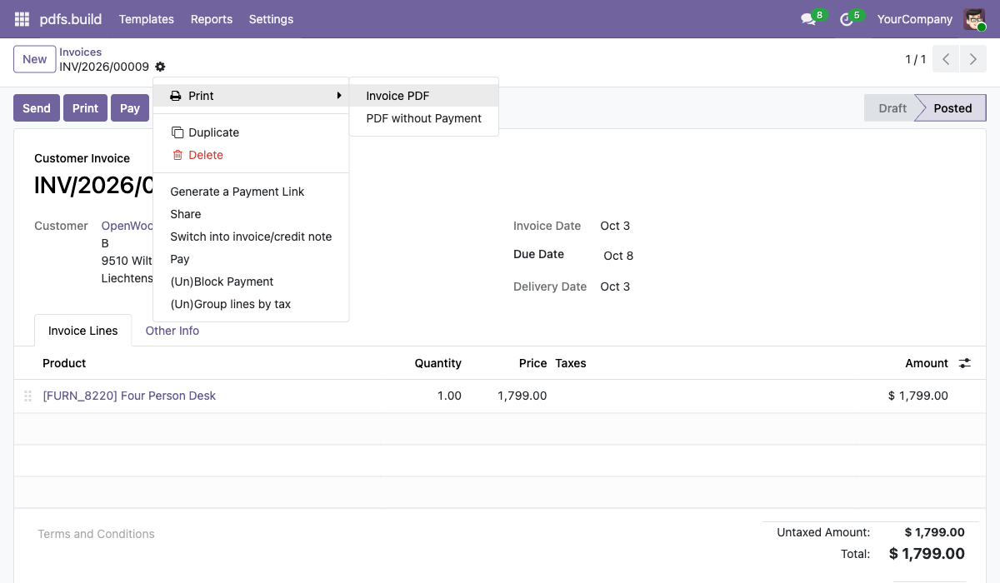
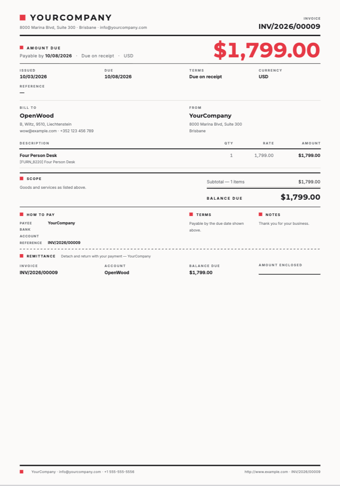
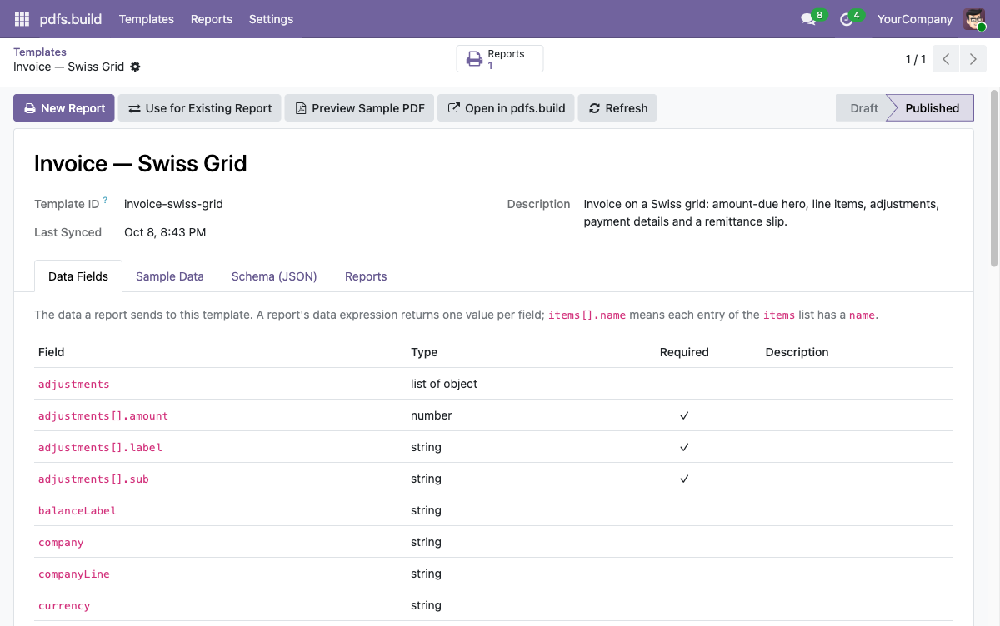
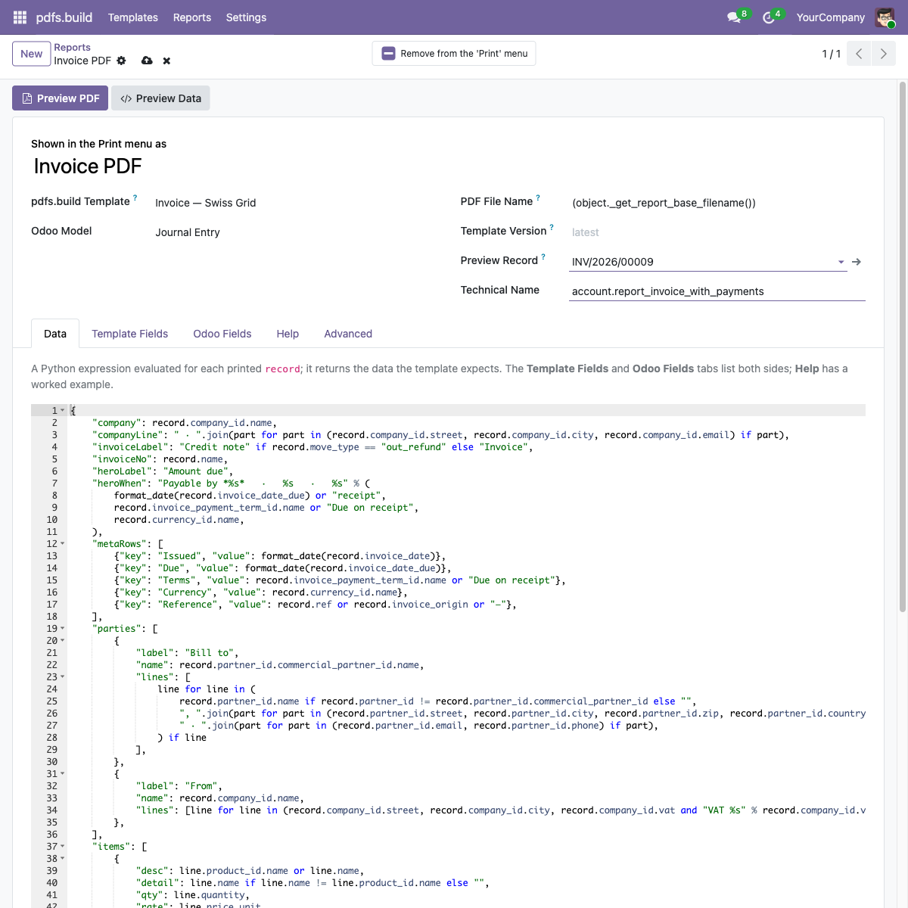
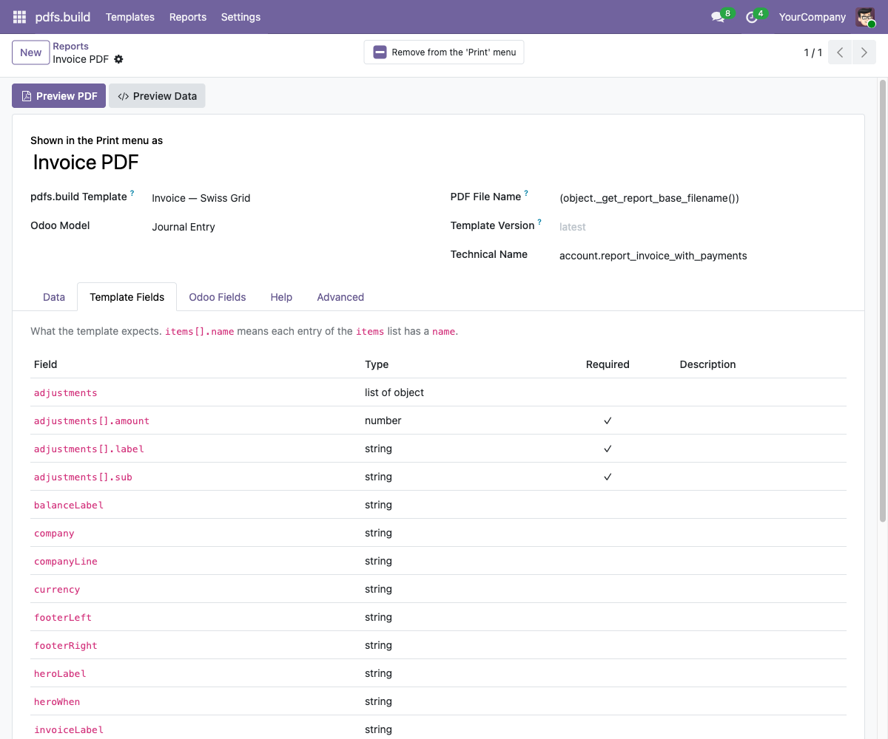
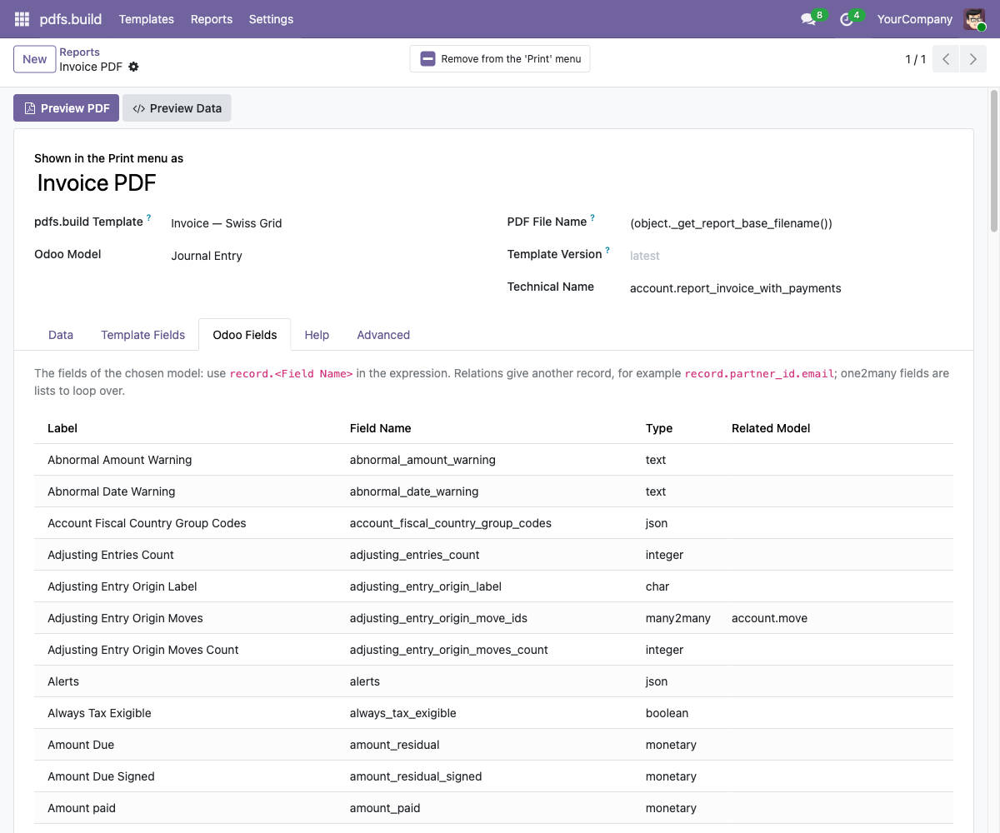
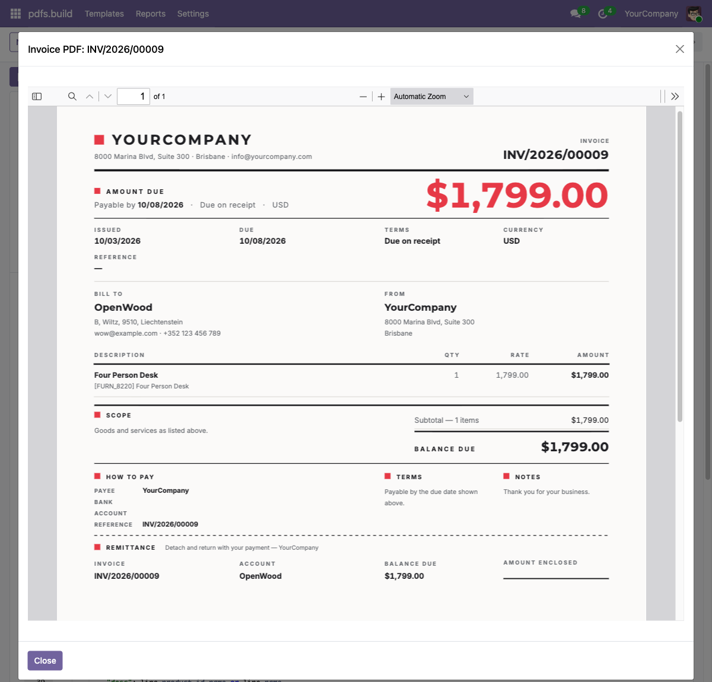
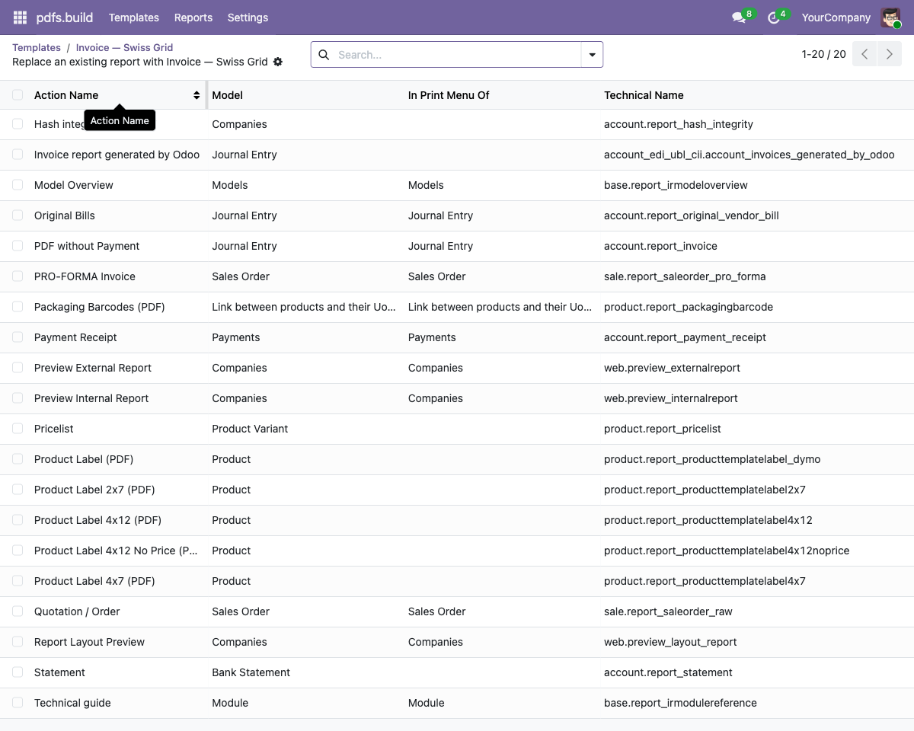

pdfs.build is a PDF template engine with an AI-assisted designer. Describe the document you want, refine it with live preview, and it comes with a JSON schema of the data it needs. This module connects those templates to Odoo.
A report maps an Odoo model to a template with a short Python expression, then appears in the record's Print menu, in email templates and wherever Odoo prints PDFs. Printing several records merges them.

Paste your pdfs.build API key and organization ID in Settings and sync the published templates. Archive the ones Odoo does not need.
Click Designs for Odoo and add an invoice, quotation, purchase order or delivery slip design: it is copied into your organization, synced, and its report is created with the data expression already written. Or create a report for any template of yours and finish the pre-generated expression. Preview the data and the PDF, then take over Odoo's own report.
The report is in the model's Print menu. PDFs are rendered by pdfs.build in a few seconds and can be saved as attachments.


What the template expects: every field with its type, whether it is required, and its description.

The Odoo model's fields with their labels, types and related models, so nobody has to guess a technical field name.

Preview PDF renders the record you pick and shows the result in Odoo's own PDF viewer, with download and print in its toolbar.

Use for Existing Report hands Invoices, Quotation / Order or any other Odoo PDF report to a template. Emails, portal downloads and stored invoice PDFs follow.
This module uses the external service pdfs.build. You need a pdfs.build account on the Starter plan or higher (the Free plan has no API access) and at least one published template. Every print sends the data produced by the report's expression, together with your API key, to api.pdfs.build. Nothing else leaves your Odoo. Render logs on pdfs.build keep the data payload for your audit trail.
Questions: hello@pdfs.build